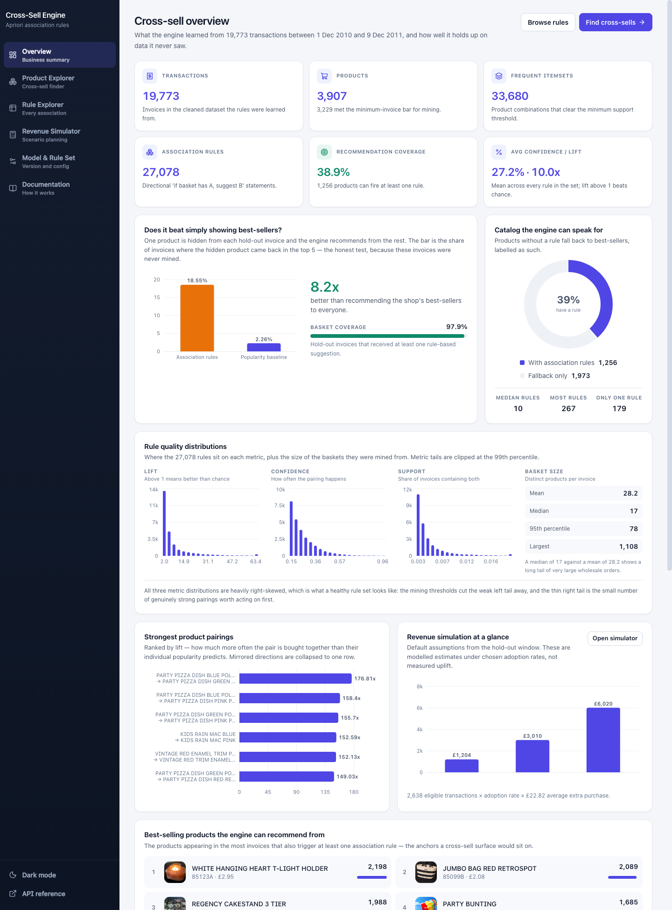
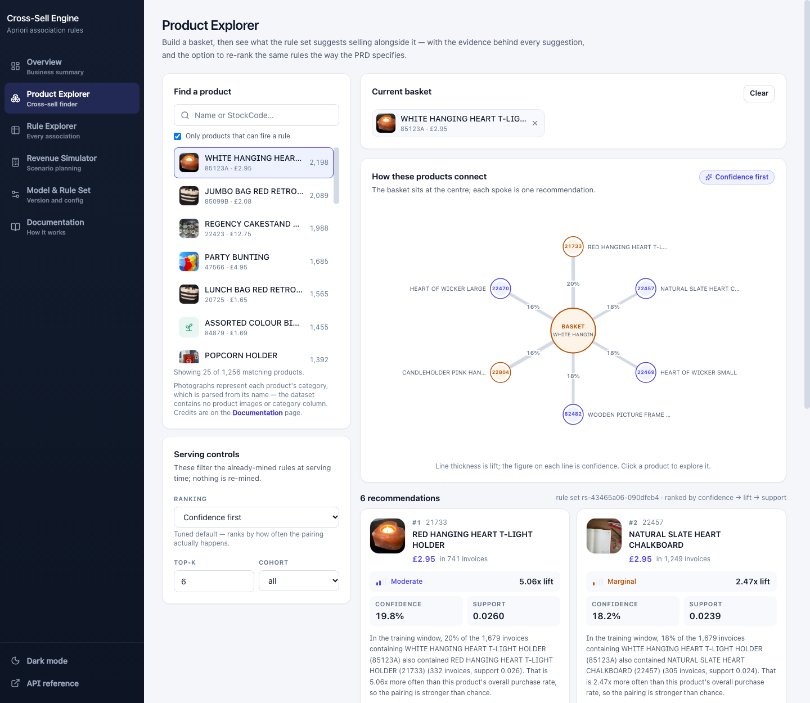

Finding which products customers buy together, and turning that into suggestions a shop can actually act on — explained in plain language.
rs-43465a06-090dfeb4
The “customers who bought this also bought…” box, built properly.
Imagine you run a gift shop. Someone puts a heart-shaped tealight holder in their basket. What should you suggest next to it?
The lazy answer is to show whatever sells most overall. That is easy, but it ignores the customer completely — everyone sees the same thing. The better answer is to look at what people who bought that exact item actually bought alongside it, and suggest that.
This project reads a year of real shop receipts, finds every pairing like that, scores how trustworthy each one is, and serves the good ones through a website and an API.
Read a year of receipts → find pairs that occur together more often than coincidence would explain → suggest those pairs, and show the proof.
Every suggestion carries its own evidence: how many receipts back it up, how reliable it is, and how much better than chance it is. If the engine has nothing solid to say about a product, it says so and falls back to best-sellers — clearly labelled, rather than inventing a confident-looking number.
Real receipts from a UK gift wholesaler, Dec 2010 – Dec 2011.
The raw file has 541,909 rows. Each row is one line on one receipt: which invoice, which product, how many, at what price. Before any analysis, rows that would mislead the model have to go — and every removal is recorded so the numbers can be audited later.
| Cleaning step | Why | Rows removed | Left |
|---|---|---|---|
| Starting point | The raw spreadsheet | — | 541,909 |
| Drop exact duplicates | Same line entered twice | 5,268 | 536,641 |
| Remove cancellations | Cancelled orders are not purchases | 9,251 | 527,390 |
| Keep positive quantities | Negatives are returns | 1,336 | 526,054 |
| Keep positive prices | Free items distort value | 1,176 | 524,878 |
| Drop service codes | Postage, fees — not products | 2,341 | 522,537 |
96.4% of the data survives. What is left describes 19,773 receipts, 3,907 products and 4,334 customers.
The engine does not care how many of something you bought — only whether it was in the basket. Ten candles and one candle are the same fact: “this basket contained candles”. So each receipt becomes a simple list of distinct products. A typical basket holds 17 different products (the average is 28, pulled up by a few very large wholesale orders).
The receipts are split by date, not randomly: the first 70% to learn from, the last 15% locked away and never looked at until the very end. Testing on data the model has already seen is the classic way to fool yourself into thinking a model is better than it is. Splitting by date also mirrors reality — you always predict the future from the past, never the other way round.
Everything the engine decides comes down to these. Here they are on one example.
Out of 1,000 receipts: product A appears on 200, product B appears on 100, and 60 receipts contain both.
60 ÷ 1,000
How common is this combination? 6 receipts in every 100 had both. Low support means the pairing rests on very few sales — treat it carefully no matter how good the other two numbers look.
60 ÷ 200
How often does it actually happen? Of the people who bought A, 30% also bought B. This is the “will this suggestion land?” number, and it is what the shipped engine ranks on.
30% ÷ 10%
Is this better than chance? B is on 10% of all receipts, but on 30% of A’s receipts — three times more often. Lift of 1 means no connection at all. Below 1, the two actually repel each other.
Each number alone can lie. A best-seller has high confidence with everything, simply because it is everywhere — lift catches that and scores it near 1. A freak pairing of two rare items can show spectacular lift off three receipts — support catches that. Used together they describe a pairing that is common enough to matter, reliable enough to act on, and real rather than coincidence.
A pairing is only kept if it appears on at least 0.3% of receipts, lands at least 15% of the time, is at least 2× better than chance, and is backed by at least 25 receipts. Out of millions of possible combinations, 27,078 clear all four.
The very highest-lift pairings turn out to be the same product in another colour — blue and green versions of one party dish, bought together 177× more often than chance. Statistically that is the strongest signal in the dataset. Commercially it is not really a cross-sell; it means customers buy ranges in multiples. Worth knowing before presenting lift as the business metric.
The Apriori algorithm, without the mathematics.
With 3,907 products, the number of possible combinations is astronomically large — far too many to count one by one. Apriori (Agrawal & Srikant, 1994) avoids that with a single clever observation.
If a product is too rare on its own, then any pair containing it must be at least as rare. So once a product fails the test, every combination involving it can be thrown away without ever being counted. That one rule is what turns an impossible search into a few seconds of work.
Groups of three were tested and performed worse — they describe the training receipts too specifically and fail on new ones, while producing seventeen times more rules to store. Pairs generalise better. This was measured, not assumed.
The algorithm is implemented directly from the 1994 paper rather than called from a
library. To prove the implementation is right, an automated test runs the same data
through the well-known mlxtend library and asserts that
every group, every count and every score matches exactly. That test is
the backbone of trusting all the numbers in this document.
Four stages, each one feeding the next.
Each stage can be rebuilt, tested and replaced without disturbing the others. The model is trained once and saved to disk; the API only reads those files. That means answering a recommendation takes milliseconds — no mining happens while a customer waits.
Each rule set gets a version stamp built from two fingerprints: one of the exact data file, one of the settings used. Same file plus same settings always produces the same version and the same rules. Alongside it sits a record of the data, the settings, the scores, and the exact software versions used.
# the whole thing, from nothing to a running dashboard make setup # install everything make data # download the sales data make train # clean → mine → score → save (about 15 seconds) make test # 184 automated checks make api # start the API make ui # start the dashboard → http://localhost:5173
A fair test, run once, on receipts the model had never seen.
Take a receipt from the locked-away final 15%. Hide one product from it. Show the engine the rest of the basket and ask for five suggestions. Did the hidden product come back? Repeat for every receipt. The share of times it did is the hit rate.
This is a deliberately hard test: the engine gets one guess at five items out of nearly four thousand. To know whether the score is any good, it is compared against the obvious alternative — always showing the five best-selling products.
18.55% against 2.26% — the engine is 8.2× better than the obvious alternative. Nearly one in five hidden products is recovered from a catalogue of 3,907, against roughly one in forty-four for best-sellers.
| 97.9% | of unseen receipts got at least one genuine rule-based suggestion |
| 38.9% | of the eligible catalogue has at least one rule the engine can fire |
| 1,256 | products can trigger a recommendation; the rest fall back to best-sellers, labelled |
| 10.0× | average lift across all 27,078 rules |
Most products in a wholesale catalogue sell rarely, and a pattern cannot be learned from a handful of sales. But the products that do have rules are the ones customers actually buy — which is why 97.9% of real receipts still get a genuine suggestion even though only 39% of the catalogue is covered.
Six screens, built for a merchandising team rather than a data scientist.

Overview — headline numbers each explained in a line, the fair-test comparison, how the rule scores are distributed, and written insights generated from the rules themselves.
The people who act on these suggestions are merchandisers, not statisticians. So the numbers are always paired with a plain-language reading — “moderate”, “strong” — and every figure on screen comes straight from the API rather than being recalculated in the browser, so what you see can never drift from what the engine computed.
The screen that answers “what should I sell next to this?”

Product Explorer — search the catalogue, build a basket, and get suggestions as product cards with price, strength rating and the full reasoning. The spider diagram shows how the basket connects to each suggestion: thicker line means a stronger pairing.
All 27,078 pairings in a searchable table. Filter by strength, sort any column, click a row for the full breakdown, export to a spreadsheet.
Try “what if 5% of customers accept a suggestion?” and see the money it would imply, with the arithmetic shown.
Exactly which data and which settings produced what you are looking at, plus the command to reproduce it.
The metrics explained with a worked example, and an honest list of what the numbers cannot tell you.
The dataset contains no product photographs. Searching for the real product names returns nothing at all. So each product shows a photograph representing its category, worked out from its name — and every screen says so. It is a visual aid, never a claim that this is the actual item.
What the revenue figures mean, and the honest limits of the whole thing.
The simulator answers a planning question: if we put this on the website, what might it be worth? The arithmetic is deliberately simple, so nothing hides inside it:
extra orders = eligible orders × how many accept the suggestion extra revenue = extra orders × value of the extra item
| Scenario | Acceptance | Extra orders | Extra revenue |
|---|---|---|---|
| Conservative | 2% | 53 | £1,204 |
| Base | 5% | 132 | £3,010 |
| Optimistic | 10% | 264 | £6,020 |
Based on 2,638 eligible orders and an average extra item value of £22.82, both taken from the unseen test period.
These are estimates built from assumptions you choose, not measured earnings. The model supplies the order count and the item value; the acceptance rate is a business judgement. Proving real uplift requires a live experiment — showing the suggestions to some customers and not others, then comparing.
A rule says two products appeared together in the past. It does not prove that promoting one causes the other to sell.
A UK gift wholesaler over twelve months. Christmas is baked into these patterns; another shop would produce different ones.
Products with too few sales get no rules and fall back to best-sellers — labelled honestly rather than dressed up.
The strongest pairings are often the same item in another colour — a range-merchandising signal, not a true cross-sell.
184 automated tests cover the cleaning rules, the algorithm, the scoring formulas, the recommendation logic and every API endpoint — including the test that checks the hand-written Apriori against an established library. The final score was measured once, on data never used for tuning.
If you read nothing else.
Reads a year of shop receipts, finds which products genuinely sell together, and serves ranked suggestions with the evidence behind each one — through an API and a six-screen dashboard.
Three scores per pairing — how common (support), how reliable (confidence), how much better than chance (lift). A pairing must clear all three thresholds to be served at all.
| Sales rows analysed | 541,909 | 96.4% survived cleaning |
| Receipts / products / customers | 19,773 · 3,907 · 4,334 | after cleaning |
| Pairings discovered | 27,078 | from 33,680 frequent groups |
| Hit rate on unseen receipts | 18.55% | one guess at five from 3,907 |
| Best-seller baseline | 2.26% | the obvious alternative |
| Improvement | 8.2× | the headline result |
| Receipts given a real suggestion | 97.9% | coverage where it counts |
| Automated tests | 184 | all passing |
| Time to train | ~15 sec | end to end |
A working, tested, reproducible cross-sell engine that is 8.2× better than showing best-sellers, explains every suggestion it makes, and is honest about the limits of what sales data can prove.